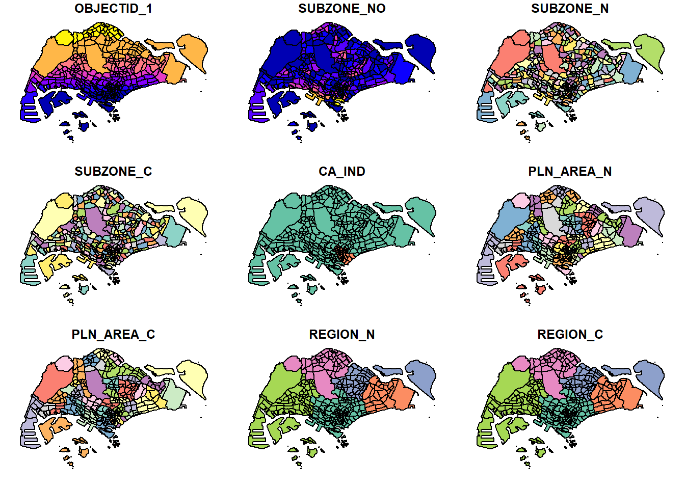
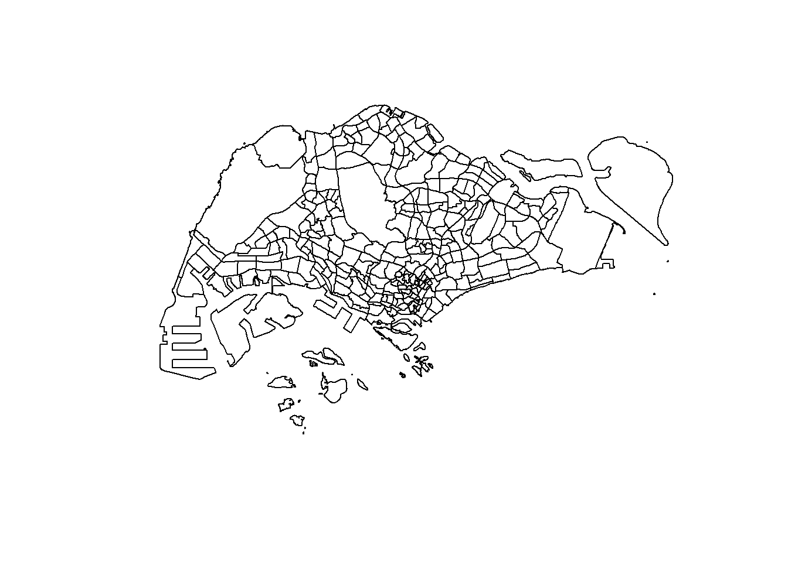
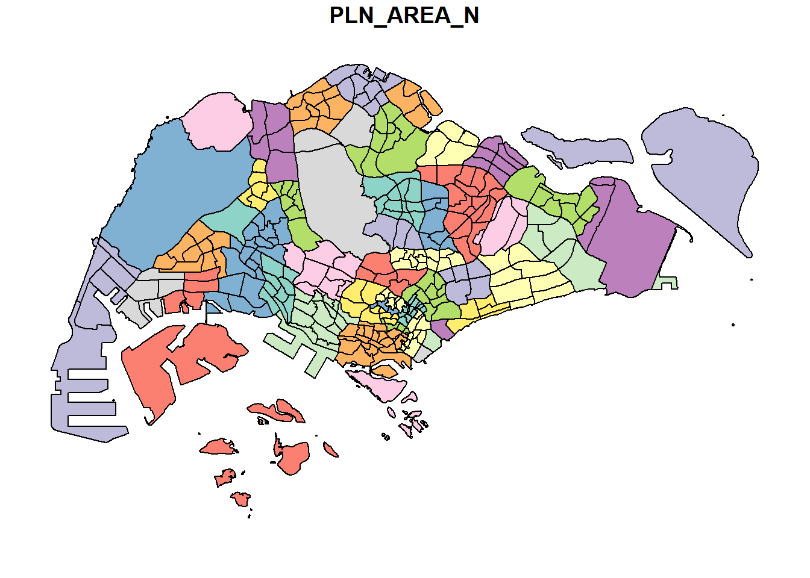
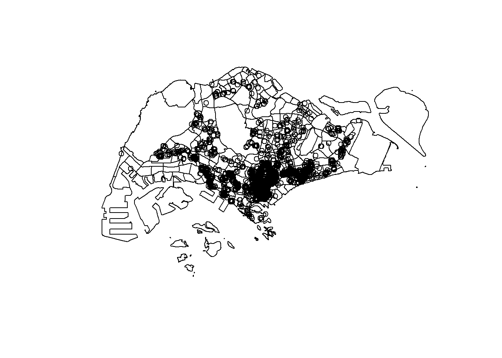
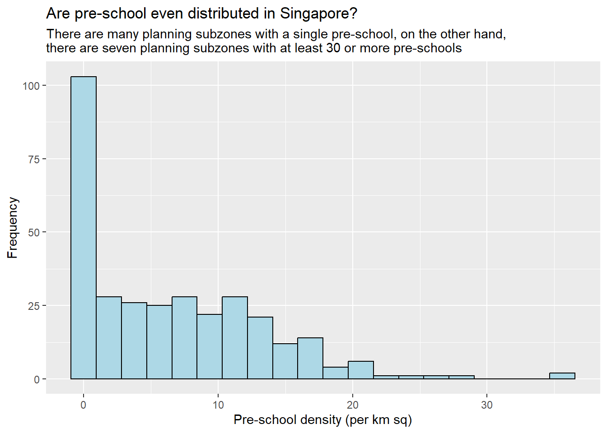
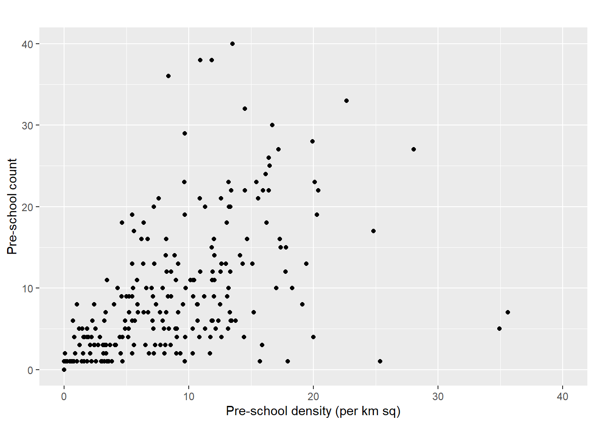

pacman::p_load(sf, tidyverse, tmap)Hands on Exercise 1
Getting Started
Install and Launching R packages
This code chunk below uses p_load() of pacman package to check if tidyverse packages are installed in the computer. If they are, then they will be launched into R.
##importing the data
mpsz <- st_read("Hands-on_ex01/data/geospatial/MasterPlan2014SubzoneBoundaryNoSea.geojson")Reading layer `MP14_SUBZONE_NO_SEA_PL' from data source
`C:\cjmheidii\ISSS626 - Geospatial\Hands-on_Ex\Hands-on_ex01\data\geospatial\MasterPlan2014SubzoneBoundaryNoSea.geojson'
using driver `GeoJSON'
Simple feature collection with 323 features and 13 fields
Geometry type: MULTIPOLYGON
Dimension: XY
Bounding box: xmin: 103.6057 ymin: 1.158699 xmax: 104.0885 ymax: 1.470775
Geodetic CRS: WGS 84preschools <- st_read("Hands-on_ex01/data/geospatial/PreSchoolsLocation.geojson")Reading layer `PreSchoolsLocation' from data source
`C:\cjmheidii\ISSS626 - Geospatial\Hands-on_Ex\Hands-on_ex01\data\geospatial\PreSchoolsLocation.geojson'
using driver `GeoJSON'
Simple feature collection with 2290 features and 2 fields
Geometry type: POINT
Dimension: XYZ
Bounding box: xmin: 103.6878 ymin: 1.247759 xmax: 103.9897 ymax: 1.462134
z_range: zmin: 0 zmax: 0
Geodetic CRS: WGS 84cycling_path <- st_read("Hands-on_ex01/data/geospatial/CyclingPathNetworkGEOJSON.geojson")Reading layer `CYCLINGPATH' from data source
`C:\cjmheidii\ISSS626 - Geospatial\Hands-on_Ex\Hands-on_ex01\data\geospatial\CyclingPathNetworkGEOJSON.geojson'
using driver `GeoJSON'
Simple feature collection with 8523 features and 6 fields
Geometry type: MULTILINESTRING
Dimension: XY
Bounding box: xmin: 103.637 ymin: 1.265428 xmax: 103.9664 ymax: 1.467361
Geodetic CRS: WGS 84neighbourhoods <- st_read("Hands-on_ex01/data/geospatial/neighbourhoods.geojson")Reading layer `neighbourhoods' from data source
`C:\cjmheidii\ISSS626 - Geospatial\Hands-on_Ex\Hands-on_ex01\data\geospatial\neighbourhoods.geojson'
using driver `GeoJSON'
Simple feature collection with 55 features and 2 fields
Geometry type: MULTIPOLYGON
Dimension: XY
Bounding box: xmin: 103.6054 ymin: 1.158699 xmax: 104.0885 ymax: 1.470775
Geodetic CRS: WGS 84now that the data is imported, the polygon feature data will be imported in shapefile format
mpsz <- st_transform(mpsz, 3414)
preschools <- st_transform(preschools, 3414)
cycling_path <- st_transform(cycling_path, 3414)
neighbourhoods <- st_transform(neighbourhoods, 3414)With the data loaded in with the proper formats, we will check the contents.
There are 3 ways to do this :
####st_geometry
st_geometry(mpsz)Geometry set for 323 features
Geometry type: MULTIPOLYGON
Dimension: XY
Bounding box: xmin: 2667.538 ymin: 15748.72 xmax: 56396.44 ymax: 50256.33
Projected CRS: SVY21 / Singapore TM
First 5 geometries:MULTIPOLYGON (((29099.02 29640.03, 29058.14 296...MULTIPOLYGON (((26750.09 29216.1, 26750.09 2922...MULTIPOLYGON (((29161.2 29723.07, 29147.2 29734...MULTIPOLYGON (((29814.11 29616.89, 29814.87 296...MULTIPOLYGON (((30137.77 29843.19, 30118.74 298...####glimpse()
glimpse(mpsz)Rows: 323
Columns: 14
$ OBJECTID_1 <int> 21, 22, 23, 24, 25, 26, 27, 28, 29, 30, 31, 32, 33, 34, 3…
$ SUBZONE_NO <int> 2, 2, 3, 4, 5, 4, 10, 12, 4, 6, 1, 1, 3, 8, 3, 7, 9, 2, 1…
$ SUBZONE_N <chr> "PEOPLE'S PARK", "BUKIT MERAH", "CHINATOWN", "PHILLIP", "…
$ SUBZONE_C <chr> "OTSZ02", "BMSZ02", "OTSZ03", "DTSZ04", "DTSZ05", "OTSZ04…
$ CA_IND <chr> "Y", "N", "Y", "Y", "Y", "Y", "N", "Y", "N", "Y", "Y", "Y…
$ PLN_AREA_N <chr> "OUTRAM", "BUKIT MERAH", "OUTRAM", "DOWNTOWN CORE", "DOWN…
$ PLN_AREA_C <chr> "OT", "BM", "OT", "DT", "DT", "OT", "BM", "DT", "BM", "DT…
$ REGION_N <chr> "CENTRAL REGION", "CENTRAL REGION", "CENTRAL REGION", "CE…
$ REGION_C <chr> "CR", "CR", "CR", "CR", "CR", "CR", "CR", "CR", "CR", "CR…
$ INC_CRC <chr> "B4120D23006C932A", "1C51019439A68700", "0FF1661344C84AED…
$ FMEL_UPD_D <chr> "20160511160621", "20160511160621", "20160511160621", "20…
$ SHAPE_1.AREA <dbl> 93140.44, 411722.82, 587222.68, 39437.94, 188767.49, 1330…
$ SHAPE_1.LEN <dbl> 1822.1927, 3074.9632, 4297.5999, 871.5549, 1872.7522, 160…
$ geometry <MULTIPOLYGON [m]> MULTIPOLYGON (((29099.02 29..., MULTIPOLYGON…####head()
head(mpsz,n=5)Simple feature collection with 5 features and 13 fields
Geometry type: MULTIPOLYGON
Dimension: XY
Bounding box: xmin: 25744.94 ymin: 28515.07 xmax: 30213.96 ymax: 29880.82
Projected CRS: SVY21 / Singapore TM
OBJECTID_1 SUBZONE_NO SUBZONE_N SUBZONE_C CA_IND PLN_AREA_N PLN_AREA_C
1 21 2 PEOPLE'S PARK OTSZ02 Y OUTRAM OT
2 22 2 BUKIT MERAH BMSZ02 N BUKIT MERAH BM
3 23 3 CHINATOWN OTSZ03 Y OUTRAM OT
4 24 4 PHILLIP DTSZ04 Y DOWNTOWN CORE DT
5 25 5 RAFFLES PLACE DTSZ05 Y DOWNTOWN CORE DT
REGION_N REGION_C INC_CRC FMEL_UPD_D SHAPE_1.AREA
1 CENTRAL REGION CR B4120D23006C932A 20160511160621 93140.44
2 CENTRAL REGION CR 1C51019439A68700 20160511160621 411722.82
3 CENTRAL REGION CR 0FF1661344C84AED 20160511160621 587222.68
4 CENTRAL REGION CR 615D4EDDEF809F8E 20160511160621 39437.94
5 CENTRAL REGION CR 72107B11807074F4 20160511160621 188767.49
SHAPE_1.LEN geometry
1 1822.1927 MULTIPOLYGON (((29099.02 29...
2 3074.9632 MULTIPOLYGON (((26750.09 29...
3 4297.5999 MULTIPOLYGON (((29161.2 297...
4 871.5549 MULTIPOLYGON (((29814.11 29...
5 1872.7522 MULTIPOLYGON (((30137.77 29...##Plotting We are also interested to visualise the geospatial features so lets look at some samples :
plot(mpsz)Warning: plotting the first 9 out of 13 attributes; use max.plot = 13 to plot
all
The default plot of an sf object is a multi-plot of all attributes, up to a reasonable maximum as shown above.
We can however choose to plot only the geometry or the sf object with the following codes below (respectively):
plot(st_geometry(mpsz))
plot(mpsz["PLN_AREA_N"])
Now, let us plot the preschool layer on top of the mpsz layer by using the code chunk below.
plot(st_geometry(mpsz))
plot(st_geometry(preschools),
add = TRUE)
Now we work with projection First look at the example of using st_crs() of sf package to show the coordinate system of mpsz
st_crs(mpsz)Coordinate Reference System:
User input: EPSG:3414
wkt:
PROJCRS["SVY21 / Singapore TM",
BASEGEOGCRS["SVY21",
DATUM["SVY21",
ELLIPSOID["WGS 84",6378137,298.257223563,
LENGTHUNIT["metre",1]]],
PRIMEM["Greenwich",0,
ANGLEUNIT["degree",0.0174532925199433]],
ID["EPSG",4757]],
CONVERSION["Singapore Transverse Mercator",
METHOD["Transverse Mercator",
ID["EPSG",9807]],
PARAMETER["Latitude of natural origin",1.36666666666667,
ANGLEUNIT["degree",0.0174532925199433],
ID["EPSG",8801]],
PARAMETER["Longitude of natural origin",103.833333333333,
ANGLEUNIT["degree",0.0174532925199433],
ID["EPSG",8802]],
PARAMETER["Scale factor at natural origin",1,
SCALEUNIT["unity",1],
ID["EPSG",8805]],
PARAMETER["False easting",28001.642,
LENGTHUNIT["metre",1],
ID["EPSG",8806]],
PARAMETER["False northing",38744.572,
LENGTHUNIT["metre",1],
ID["EPSG",8807]]],
CS[Cartesian,2],
AXIS["northing (N)",north,
ORDER[1],
LENGTHUNIT["metre",1]],
AXIS["easting (E)",east,
ORDER[2],
LENGTHUNIT["metre",1]],
USAGE[
SCOPE["Cadastre, engineering survey, topographic mapping."],
AREA["Singapore - onshore and offshore."],
BBOX[1.13,103.59,1.47,104.07]],
ID["EPSG",3414]]Currently the EPSG code is correct (last line) being 3414. However if its wrong just use the following code chunk to fix the code.
mpsz <- st_set_crs(mpsz, 3414)##Transforming from wgs84 to svy21.
It is very common for us to transform the original data from geographic coordinate system to projected coordinate system. This is because geographic coordinate system is not appropriate if the analysis need to use distance or/and area measurements. it is very common for us to transform the original data from geographic coordinate system to projected coordinate system. This is because geographic coordinate system is not appropriate if the analysis need to use distance or/and area measurements.
Let us perform the projection transformation by using the code chunk below.
preschool <- st_transform(preschools,
crs = 3414)Now its in the svy21 projected coordinate system. Now let us plot the preschool layer on top of the mpsz layer using the previous used code chunk
plot(st_geometry(mpsz))
plot(st_geometry(preschools),
add = TRUE)
Aspatial data
Now let us import the aspatial data to work with it. After importing the data file we also examine it to ensure the file is imported correctly
listings <- read_csv("Hands-on_ex01/data/aspatial/listings.csv")Rows: 3247 Columns: 19
── Column specification ────────────────────────────────────────────────────────
Delimiter: ","
chr (6): name, host_name, neighbourhood_group, neighbourhood, room_type, l...
dbl (12): id, host_id, host_profile_id, latitude, longitude, price, minimum...
date (1): last_review
ℹ Use `spec()` to retrieve the full column specification for this data.
ℹ Specify the column types or set `show_col_types = FALSE` to quiet this message.list(listings) [[1]]
# A tibble: 3,247 × 19
id name host_id host_profile_id host_name neighbourhood_group
<dbl> <chr> <dbl> <dbl> <chr> <chr>
1 71609 Ensuite Room (… 3.67e5 1.46e18 Belinda East Region
2 71896 B&B Room 1 ne… 3.67e5 1.46e18 Belinda East Region
3 71903 Room 2-near Ai… 3.67e5 1.46e18 Belinda East Region
4 294281 5 mins walk fr… 1.52e6 1.46e18 Elizbeth Central Region
5 344803 Budget short s… 3.67e5 1.46e18 Belinda East Region
6 369141 5mins from New… 1.52e6 1.46e18 Elizbeth Central Region
7 369145 5 mins walk fr… 1.52e6 1.46e18 Elizbeth Central Region
8 4069756 DORMS - In the… 1.75e7 1.46e18 Royal Central Region
9 4211375 Near NTU Amazi… 1.23e7 1.46e18 Mia West Region
10 4271250 City Ctr_River… 2.22e7 1.46e18 Yong Xing Central Region
# ℹ 3,237 more rows
# ℹ 13 more variables: neighbourhood <chr>, latitude <dbl>, longitude <dbl>,
# room_type <chr>, price <dbl>, minimum_nights <dbl>,
# number_of_reviews <dbl>, last_review <date>, reviews_per_month <dbl>,
# calculated_host_listings_count <dbl>, availability_365 <dbl>,
# number_of_reviews_ltm <dbl>, license <chr>create a simple feature data frame from aspatial data frame
The following code converts listing data frame into a simple feature data frame by using st_as_sf() of sf packages.
We will also examine the contents afterwards through glimpse()
listings_sf <- st_as_sf(listings,
coords = c("longitude", "latitude"),
crs=4326) %>%
st_transform(crs = 3414)
glimpse(listings_sf)Rows: 3,247
Columns: 18
$ id <dbl> 71609, 71896, 71903, 294281, 344803, 36…
$ name <chr> "Ensuite Room (Room 1 & 2) near EXPO", …
$ host_id <dbl> 367042, 367042, 367042, 1521514, 367042…
$ host_profile_id <dbl> 1.462517e+18, 1.462517e+18, 1.462517e+1…
$ host_name <chr> "Belinda", "Belinda", "Belinda", "Elizb…
$ neighbourhood_group <chr> "East Region", "East Region", "East Reg…
$ neighbourhood <chr> "Tampines", "Tampines", "Tampines", "Ne…
$ room_type <chr> "Private room", "Private room", "Privat…
$ price <dbl> NA, NA, NA, 32, 15, NA, 26, 11, 28, 48,…
$ minimum_nights <dbl> 92, 92, 92, 92, 92, 92, 92, 92, 92, 92,…
$ number_of_reviews <dbl> 19, 24, 46, 131, 60, 81, 163, 20, 0, 17…
$ last_review <date> 2020-01-17, 2019-10-13, 2020-01-09, 20…
$ reviews_per_month <dbl> 0.11, 0.13, 0.25, 0.75, 0.34, 0.52, 0.9…
$ calculated_host_listings_count <dbl> 5, 5, 5, 7, 5, 7, 7, 4, 2, 1, 8, 1, 73,…
$ availability_365 <dbl> 90, 90, 90, 364, 364, 364, 364, 364, 36…
$ number_of_reviews_ltm <dbl> 0, 0, 0, 0, 0, 0, 0, 0, 0, 0, 0, 0, 0, …
$ license <chr> NA, NA, NA, NA, NA, NA, NA, NA, NA, NA,…
$ geometry <POINT [m]> POINT (41972.5 36390.05), POINT (…so lets plot listing_sf on top of mpsz layer
plot(st_geometry(mpsz))
plot(st_geometry(listings_sf),
add = TRUE)
Geoprocessing with sf package
sf package also offers a wide range of geoprocessing (also known as GIS analysis) functions.
Use case 1 : Land acquisition analysis
Scenario : The authority is planning to upgrade the exiting cycling path. To do so, they need to acquire 5 metres of reserved land on the both sides of the existing cycling path. You are tasked to determine the extend of the land need to be acquired and their total area.
Solution : 1. st_buffer() of sf package is used to compute the 5-meter buffers around cycling paths.
buffer_cycling <- st_buffer(
cycling_path, dist = 5, nQuadSegs = 30)- calculate the area of the buffers as shown in the code chunk below
buffer_cycling$AREA <- st_area(buffer_cycling)- sum() of Base R will be used to derive the total land involved
sum(buffer_cycling$AREA)4989654 [m^2]** Note, a plot showing the buffer by a selected planning zone can be created, assuming we are interested on the land acquisition in Tampines West planning subzone.
Firstly, filter() of dplyr package will be used to extract polygon feature of Tampines West by using the code chunk below.
mpsz_selected <- mpsz %>%
filter(SUBZONE_N == "TAMPINES WEST") Next st_intersection() of sf package will be used to clip cycling buffers within Tampines West planning subzone. Plot() will also be used to create the plot
buffer_cycling_selected <- st_intersection(
buffer_cycling, mpsz_selected)Warning: attribute variables are assumed to be spatially constant throughout
all geometriesUse Case 2 : To determine the number of pre-schools by planning subzone
Scenario : The authority requires a count of pre-schools for each planning subzone to support forward planning. Using R and the sf package, perform the necessary geoprocessing to compute these counts and present the results clearly.
Solution: Identify pre-schools located inside each Planning Subzone by using st_intersects(). Next, length() of Base R is used to calculate numbers of pre-schools that fall inside each planning subzone.
mpsz$`PreSch Count`<- lengths(st_intersects(mpsz, preschool))Lets see the summary and statistics of the file
summary(mpsz$`PreSch Count`) Min. 1st Qu. Median Mean 3rd Qu. Max.
0.00 0.00 4.00 7.09 10.00 72.00 Most number of preschools (Top_n)
top_n(mpsz, 1, `PreSch Count`)Simple feature collection with 1 feature and 14 fields
Geometry type: MULTIPOLYGON
Dimension: XY
Bounding box: xmin: 39655.33 ymin: 35966 xmax: 42940.57 ymax: 38622.37
Projected CRS: SVY21 / Singapore TM
OBJECTID_1 SUBZONE_NO SUBZONE_N SUBZONE_C CA_IND PLN_AREA_N PLN_AREA_C
1 204 2 TAMPINES EAST TMSZ02 N TAMPINES TM
REGION_N REGION_C INC_CRC FMEL_UPD_D SHAPE_1.AREA SHAPE_1.LEN
1 EAST REGION ER 21658EAAF84F4D8D 20160511160621 4339824 10180.62
geometry PreSch Count
1 MULTIPOLYGON (((42196.76 38... 72Derviving area of each planning zone
mpsz$Area <- mpsz %>%
st_area()Next, mutate() of dplyr package is used to compute the density by using the code chunk below.
mpsz <- mpsz %>%
mutate(`PreSch Density` = `PreSch Count`/Area * 1000000)Finally we plot some diagrams to show the insights.
PreSch Density Distribution
hist(mpsz$`PreSch Density`)
ggplot2 usage
ggplot(data=mpsz,
aes(x= as.numeric(`PreSch Density`)))+
geom_histogram(bins=20,
color="black",
fill="light blue") +
labs(title = "Are pre-school even distributed in Singapore?",
subtitle= "There are many planning subzones with a single pre-school, on the other hand, \nthere are seven planning subzones with at least 30 or more pre-schools",
x = "Pre-school density (per km sq)",
y = "Frequency")
Scatter plot
ggplot(data=mpsz,
aes(y = `PreSch Count`,
x= as.numeric(`PreSch Density`)))+
geom_point(color="black",
fill="light blue") +
xlim(0, 40) +
ylim(0, 40) +
labs(title = "",
x = "Pre-school density (per km sq)",
y = "Pre-school count")Warning: Removed 2 rows containing missing values or values outside the scale range
(`geom_point()`).